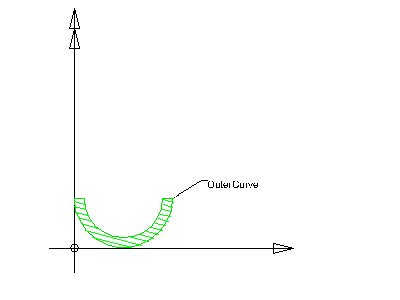

8.15.3.1 IfcArbitraryClosedProfileDef
| Beliebiges geschlossenes Profil |
The closed profile IfcArbitraryClosedProfileDef defines an arbitrary two-dimensional profile for the use within the swept surface geometry, the swept area solid or a sectioned spine. It is given by an outer boundary from which the surface or solid can be constructed.
HISTORY New entity in IFC1.5. Entity has been renamed from IfcArbitraryProfileDef in IFC2x.
Informal Propositions:
- The OuterCurve has to be a closed curve.
- The OuterCurve shall not intersect.
Figure 354 illustrates the arbitrary closed profile definition. The OuterCurve is defined in the underlying coordinate system. The underlying coordinate system is defined by the swept surface or swept area solid that uses the profile definition. It is the xy plane of either:
- IfcSweptSurface.Position
- IfcSweptAreaSolid.Position
or in case of sectioned spines the xy plane of each list member of IfcSectionedSpine.CrossSectionPositions. The OuterCurve
attribute defines a two dimensional closed bounded curve.
 |
Figure 354 — Arbitrary closed profile |
XSD Specification:
<xs:element name="IfcArbitraryClosedProfileDef" type="ifc:IfcArbitraryClosedProfileDef" substitutionGroup="ifc:IfcProfileDef" nillable="true"/>
<xs:complexType name="IfcArbitraryClosedProfileDef">
<xs:complexContent>
<xs:extension base="ifc:IfcProfileDef">
<xs:sequence>
<xs:element name="OuterCurve" type="ifc:IfcCurve" nillable="true"/>
</xs:sequence>
</xs:extension>
</xs:complexContent>
</xs:complexType>
EXPRESS Specification:
|
ENTITY IfcArbitraryClosedProfileDef
|
|
|
| WR1 | : | OuterCurve.Dim = 2; | | WR2 | : | NOT('IFCGEOMETRYRESOURCE.IFCLINE' IN TYPEOF(OuterCurve)); | | WR3 | : | NOT('IFCGEOMETRYRESOURCE.IFCOFFSETCURVE2D' IN TYPEOF(OuterCurve)); |
|
 EXPRESS-G diagram
EXPRESS-G diagram
Attribute Definitions:
| OuterCurve | : | Bounded curve, defining the outer boundaries of the arbitrary profile. |
Formal Propositions:
| WR1 | : | The curve used for the outer curve definition shall have the dimensionality of 2.
|
| WR2 | : | The outer curve shall not be of type IfcLine as IfcLine is not a closed curve. |
| WR3 | : | The outer curve shall not be of type IfcOffsetCurve2D as it should not be defined as an offset of another curve. |
Inheritance Graph:
|
ENTITY IfcArbitraryClosedProfileDef
|
 Link to this page
Link to this page